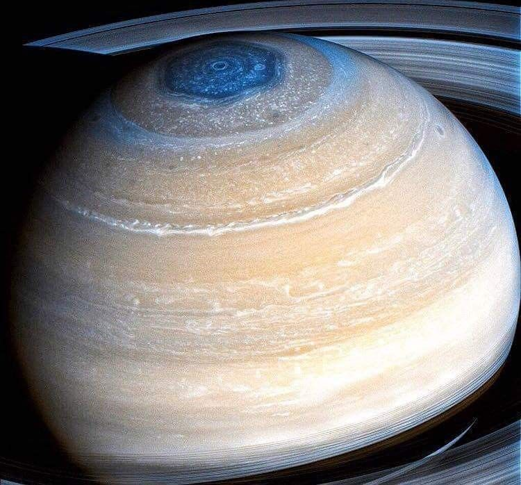

About Saturn
Saturn is the sixth planet from the Sun and the second largest in the Solar System, after Jupiter. It is a gas giant, with an average radius of about nine times that of Earth. Even though Saturn is almost as big as Jupiter, Saturn has less than a third the mass of Jupiter. Saturn's interior is thought to be composed of a rocky core, surrounded by a deep layer of metallic hydrogen, an intermediate layer of liquid hydrogen and liquid helium, and an outer layer of gas.
- Diameter: 116460 km
- Orbit: 9.58 AU from the Sun
- Interesting Fact: Saturn is famous for its stunning rings, made of frozen water, ice and debris and they are considered one of the most beautiful sights in the Solar System.